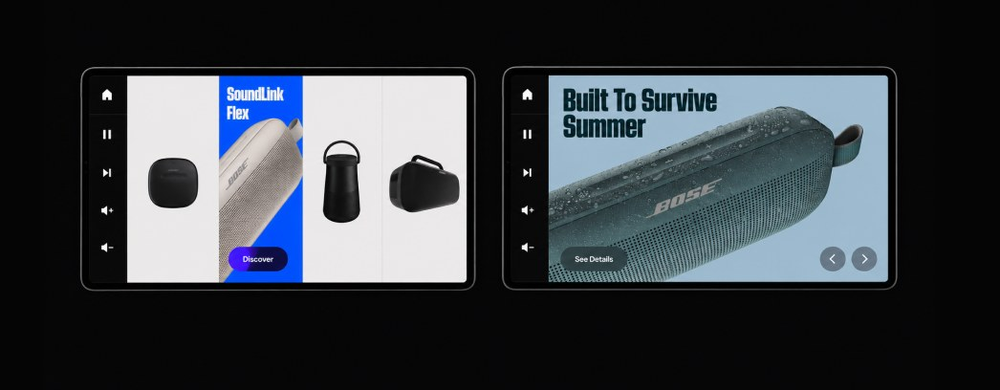
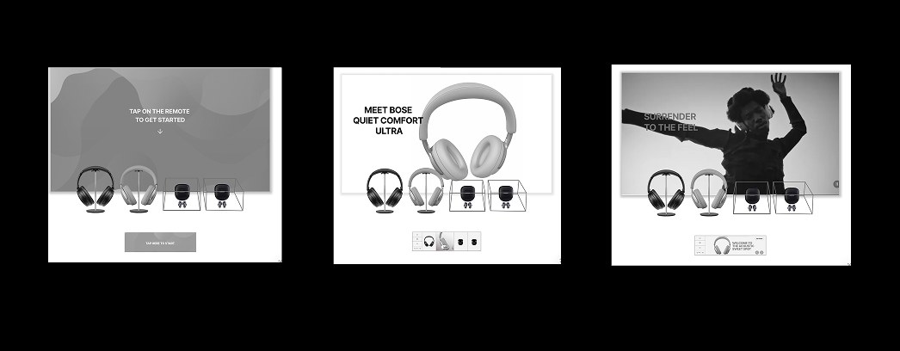
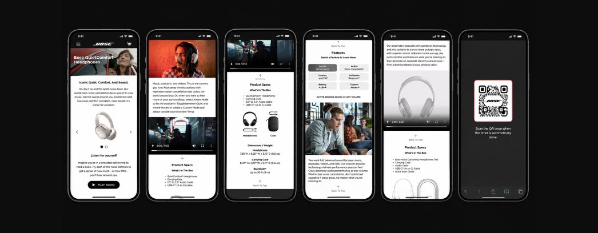

Case study · Digital retail
Bringing an iconic
audio brand to life
in-store.
Bose has spent decades obsessing over one thing: how people experience sound. Our challenge was to take that same level of thought, research, and engineering and translate it into digital retail experiences that could help customers understand, experience, and ultimately choose Bose products.
Immersion
Start by understanding Bose.
We began at Bose headquarters, immersing ourselves in the company, its products, its customers, and its culture. We had the opportunity to spend time with longtime Bose employees who had an incredible depth of knowledge about the company and the thinking behind its products.
That mattered. Bose isn’t a brand you understand by simply reading a brand guide. Its identity is deeply connected to research, engineering, experimentation, and a relentless focus on how people actually experience sound. Before designing anything, we needed to absorb as much of that thinking as possible.

Research
Years of insight were already there. Our job was to find what mattered.
Bose had already invested extensively in understanding its customers. Rather than starting research from zero, we immersed ourselves in the research Bose had already accumulated.
The opportunity was to turn that knowledge into an experience. Research became the foundation for deciding what the retail display needed to communicate, when it needed to communicate it, and how much information a customer actually needed.
- Its customers
- Shopping behaviors
- Product understanding
- Purchase decisions
- The role of demonstrations
- Questions customers have before buying
- What people need to feel confident in their choice
The challenge
Designing digital experiences inside a physical system.
Bose was preparing a growing catalog of products that needed compelling in-store sales experiences. Digital displays could help customers understand what made each product special, explore features, and move closer to a purchase.
But we weren’t designing for an unlimited canvas.
- The displays already existed
- The hardware already existed
- The physical retail system already existed
Designing on the rails
Every pixel had a physical consequence.
The form factor of the Bose displays dictated what the digital experience could actually do. Our wireframes and visual designs had to sit precisely on the rails of the existing physical display system.
We couldn’t simply design the ideal interface and ask the physical environment to accommodate it. The digital experience had to respect the product, the hardware, and the space around it. That constraint became part of the design process.
- Screen dimensions
- Product placement
- Viewing angles
- Interaction areas
- Physical hardware
- The surrounding retail environment
Experience design
Give customers what they need without getting between them and the product.
The product itself needed to remain the hero. Our job was to create an experience around it that helped customers quickly understand four things.
- What is this?
- Why is it different?
- Why should I care?
- Which Bose product is right for me?
We translated the research into information architecture, interaction patterns, product storytelling, and wireframes designed specifically around the retail environment. The experience needed to be useful without becoming distracting.
Customers weren’t coming into a store to explore a complicated application. They were there to experience Bose.

Visual design
Make the interface feel like Bose.
Once the experience was structurally right, the visual design needed to translate Bose’s premium brand into the digital retail environment. The goal wasn’t visual decoration. It was to reinforce the same qualities customers associate with Bose products.
The interface needed to feel sophisticated without competing with the industrial design of the products surrounding it. The best outcome was an experience where the physical product, retail display, content, and digital interface felt like they had been designed together.
Beyond the screen
Creating a connected retail experience.
The work ultimately extended beyond a single digital display. Bose was creating an ecosystem in which customers could encounter the brand across physical and digital touchpoints.
In-store displays
Interactive physical and digital experiences designed to give customers the information and confidence they needed to make a decision.
QR experiences
Digital extensions of the physical display that let customers continue exploring product information on their own devices.
Bose.com
Rich product storytelling and interactive experiences that helped explain sophisticated audio technology in understandable ways.
Retail partner experiences
Branded digital content designed to carry the Bose experience into reseller ecommerce environments.

The result
Constraints aren’t separate from the design problem. They are the design problem.
The work helped Bose translate its extensive understanding of customers into digital experiences that supported a new generation of products across the retail environment. For me, the project reinforced something important about experience design.
- We couldn’t change the physical displays
- We couldn’t ignore how customers behave inside a store
- We couldn’t overwhelm the products with an interface
- And we couldn’t design something that simply looked like Bose
We had to understand the research, understand the brand, understand the hardware, and find the experience that worked where all of those things intersected.
- Immersion
- Research
- Constraints
- Experience
- Design